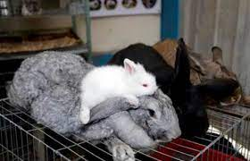

CONEJOS
¿Que tipo de animal es?
El conejo común o conejo europeo (Oryctolagus cuniculus) es una especie de mamífero lagomorfo de la familia
Leporidae, y el único miembro actual del género Oryctolagus. Mide hasta 50 cm y su masa puede ser hasta 2.5
kg. Ha sido introducido en varios continentes y es la especie que se utiliza en la cocina y en la
cunicultura. Está incluido en la lista 100 de las especies exóticas invasoras más dañinas del mundo de la
Unión Internacional para la Conservación de la Naturaleza. Su introducción en Australia es uno de los
capítulos más importantes del deterioro causado por especies exóticas invasoras.
Curiosidades sobre los conejos
¿Sabias que los conejos son una de las mascotas más inteligentes?
Los conejos poseen una visión especial. Estos animalitos tienen una visión de casi 360º. Sin embargo, tienen
un punto ciego. Como los peces, los conejos logran ver todo lo que se esconde detrás de ellos y el único
punto ciego que tienen es muy pequeño y se encuentra delante de su nariz. Es decir, pueden llegar a ver lo
que tienen detrás, ¡pero no justo delante!
Si quiere saber mas curiosidades Haz click aqui!!!

Sus Caracteristicas
Un conejo pesa entre 1,5 y 2,5 kg en estado salvaje. Tiene orejas largas de hasta 7 cm las cuales
le ayudan a regular la temperatura del cuerpo y una cola muy corta. Sus patas anteriores son más cortas que
las
posteriores. Mide de 33 a 50 cm en condiciones afables, incluso más en razas domésticas para carne.
Tipos de Conejos
- Belier o Mini lop
- De orejas cortas, con forma redondeada y de tonalidades grises, negras, marrones o blancas, es uno de
los conejos más comunes en los hogares por su pequeño tamaño. De hecho, no suelen pesar más de un kilo y
medio.
- Conejo Hotot
- El conejo hotot se caracteriza por su tonalidad blanca, pudiendo tener una pequeña marca oscura
alrededor de los ojos.
- Rex
- El conejo Rex puede ser blanco, negro, marrón, con o sin manchas y con un suave pelaje en cualquier
caso. Su tamaño puede ser estándar (hasta los 5 kilos) o más mini (entre 1 y 2 kilos).
- Gigante de Flandes
- Este animal destaca por su considerable tamaño teniendo en cuenta que, de media, los demás tipos de
conejos no suelen superar los cuatro kilos. Por ello, el Gigante de Flandes se le conoce por ser el
conejo más grande del mundo.

Donde Habitan?
Generalmente habita en praderas secas y cubiertas de matorrales para poder esconderse, evitando
al mismo tiempo los grandes bosques en los que su exposición se incrementaría de forma notable. Para
construir las madrigueras prefieren asentarse en suelo arenoso.
Lo que Comen